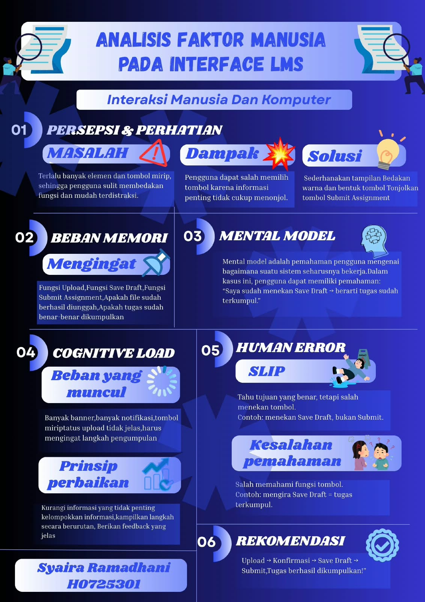
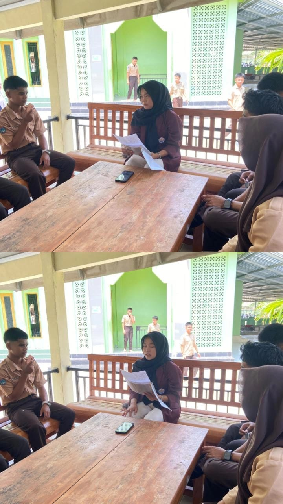

KARYA SAYA
Daftar Proyek
Berikut beberapa contoh proyek dan latihan yang relevan dengan pembelajaran saya. Konten dapat diperbarui sesuai karya yang benar-benar sudah dibuat.

foto kegiatan kampus
kegiatan pengenalan kampus bagi mahasiswa baru.
Lihat detail →
Catatan: Nama proyek di atas merupakan contoh untuk template portofolio. Sesuaikan deskripsi dengan proyek yang benar-benar kamu kerjakan.